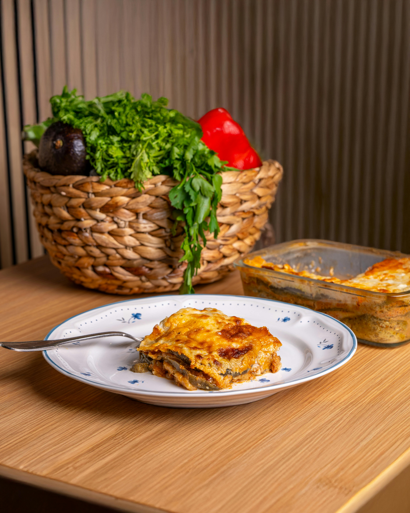

Lasagna, a classic!

What is it:
Lasagna is a type of pasta, one of the most popular dishes in Italy. It is made of sheets of pasta layered with meat, vegetables, and cheese.
Ingredients:
- Lasagna sheets
- 500 g ground beef
- Tomato sauce
- Mozzarella cheese, grated
- Parmesan cheese, grated
- 1 tablespoon of olive oil
- 1 bell pepper, diced
- 1 onion, diced
- 2 cloves of garlic, minced
- Salt and pepper to taste
- Fresh basil (optional)
- Red wine (optional)
- 1 tablespoon tomato paste
- Seasonings of choice (e.g., oregano, thyme, onion powder, chili powder, italian seasoning)
Directions:
- Preheat the oven to 375°F (190°C).
- Cook the lasagna sheets according to the package instructions.
- In a large pan, heat the olive oil and sauté the onion and garlic until fragrant.
- Add the ground beef and cook until browned.
- Add bell pepper and cook until softened.
- Stir in the tomato sauce and tomato paste, and season with salt and pepper, and any desired seasonings.
- Simmer the sauce for 10 minutes.
- Spread a thin layer of sauce in the bottom of a 9x13 inch baking dish.
- Layer the lasagna sheets, meat sauce, and cheeses alternately.
- Top with a final layer of cheese.
- Bake for 30-35 minutes until bubbly and golden brown.
Back to Home